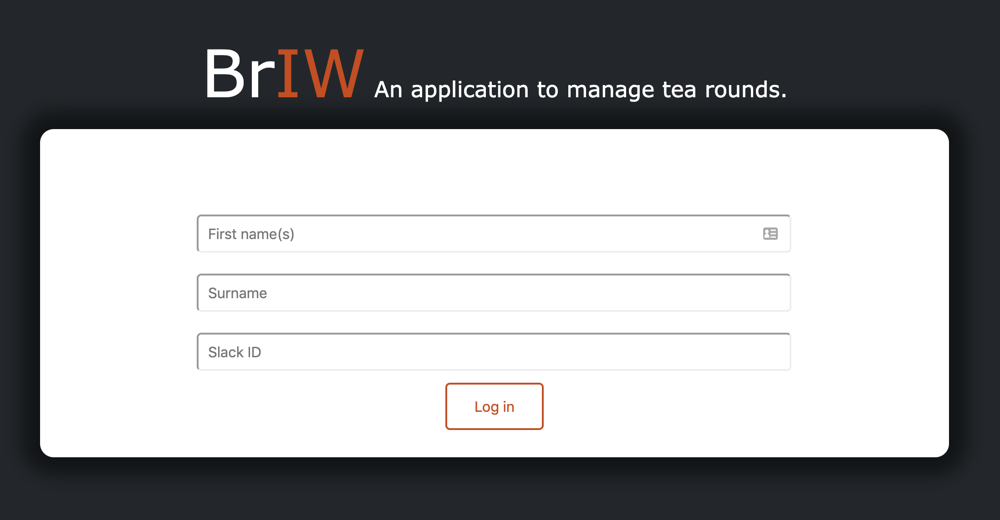
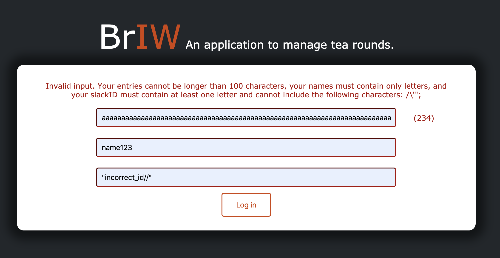
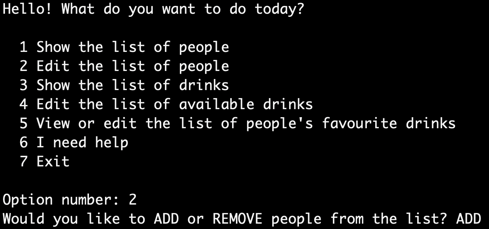
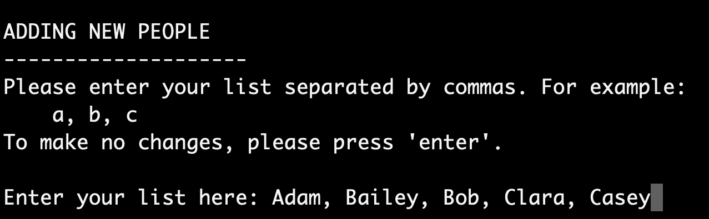
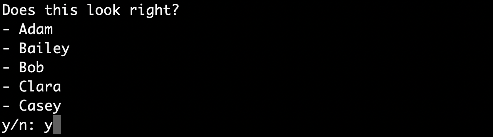
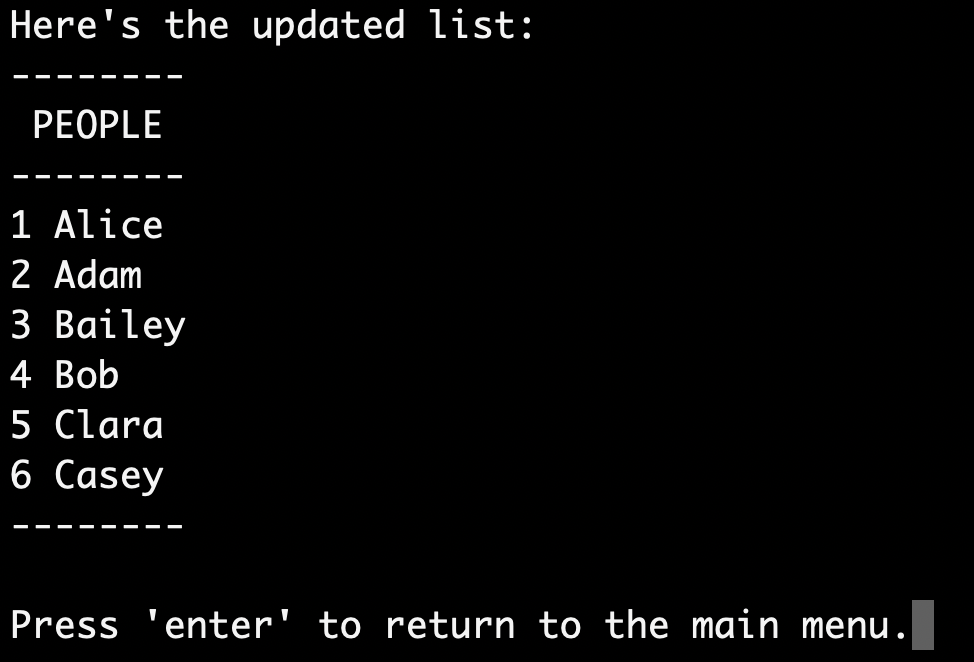

BrIW
How to use the site.
Use these handy links to jump to the section you need help with:
- Login Page
- Registration
- Choosing a drink preference
- Joining an existing drinks round
- Starting a new round
- Ending your round
The Login Page
When first arriving at the BrIW site you'll be asked to log in with your first name, surname, and slack id. If you're new, don't worry! You'll just be asked to register after you've entered your details.
Make sure to get these details right or the site won't recognise you and you'll have to register again!
Please note: The site will not accept special characters in the first name and surname fields, as well as certain characters in the slack id field. If you're stuck check the error message.
^ return to the top of the page. ^
Editing the People and Drinks Lists
To edit either of the lists, you will need to first choose whether you would like to add or remove items, and then enter a comma separated list of people/drink names. The application will ask for confirmation, and it will then show you the updated list.
   